Learn iOS apprentice in 10 days
什么是iOS apprentice？
在完成了上一个任务之后，我总算迎来了又一个更加巨大的挑战，这次直接换了一个新的平台：iOS。我从来没有接触过iOS的编程，之前只是听说过Swift和Cocoa Touch，但是Xcode完全没有用过。于是经过一番上网查找，我发现了一个非常适合新手入门的教材： raywenderlich的iOS apprentice！

他总共包括四个部分，每一个部分教你编写一个app，难度从低到高。
Bull's Eye
Checklist
MyLocation
StoreSearch
第一个app: Bull's Eye


从怎么样创建一个新的single view app说起，非常容易上手
 Project Navigator
Project Navigator Obejct Library
Obejct Library Drag item to view
Drag item to view Make connections from object item to View Controller
Make connections from object item to View Controller Attributes Inspector
Attributes Inspector
 Item Outlet
Item Outlet Another view controller
Another view controller Segue
Segue Add Constraints
Add Constraints
第一个app基本上解决了很多界面上的问题，storyboard和editor之前的交流也讲了很多，@IBAction， @IBOutlet，segue等等一切都有涉及。之后第二个app就会更深层次的接触到iOS特有的模式了，比如delegate，还有一切经典的design pattern，比如MVC
第二个app: Checklist
第二个app就没有那么简单了，他先讲了table view和navigation bar
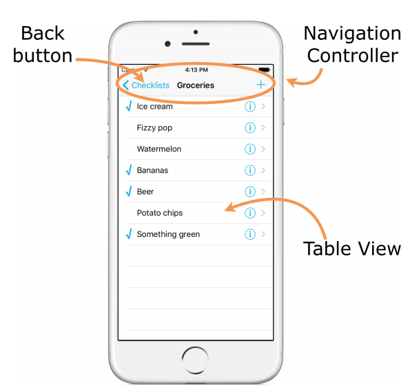跟普通的view不同的是它由一行行的cell组成，这些cell可以被重复使用，当用户往下滑动时，更多的内容会被显示但是并不是每一行data都被存放在一个新的table cell里。离开显示范围的cell会重新出现在底部，并显示出新的data。
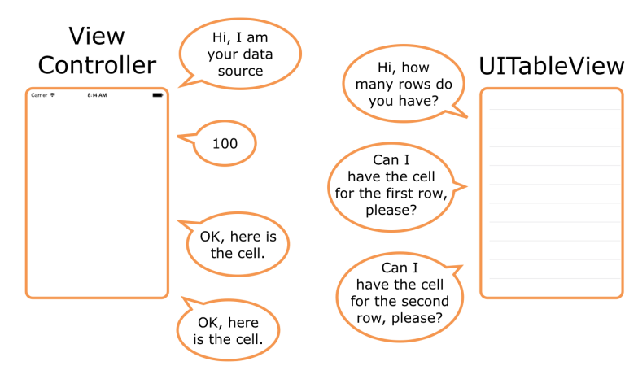Protocol
什么是protocol？他其实是一种已经被写好了的methods的集合，UITableView就是一个protocol，我们通过它来显示table view，但是如果我们想改变一些显示方式，让他更适应我们自己的app，那么就要override其中一些method，这很常见
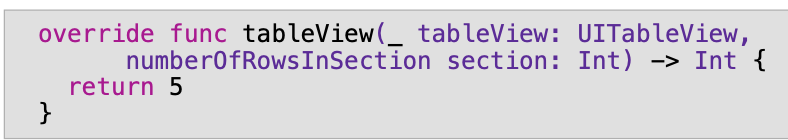一般让一个table view更好的显示，我们需要override三个methods
- override func tableView(_ tableView: UITableView, numberOfRowsInSection section: Int) -> Int
- override func tableView(_ tableView: UITableView, cellForRowAt indexPath: IndexPath) -> UITableViewCell
- override func tableView(_ tableView: UITableView, didSelectRowAt indexPath: IndexPath)
MVC model
MVC model是一种常见的设计模式，将代码分割成三个部分，每一个部分只负责他自己的任务，这样让程序结构更清晰。Model主要负责储存数据，view负责显示数据给用户，而controller负责显示正确的数据，包括运算等等
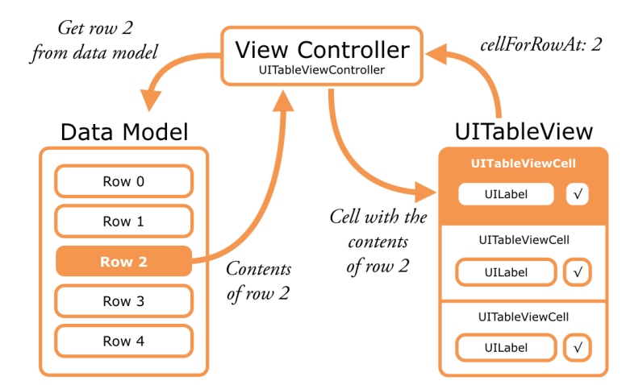Array
这个app将table cells中的数据储存在一个array中，新建了一个checklistItem model,这样的话每次如果有数据变动就只需要增加和删除array中的数据。
Initializer
在Swift语言中，所有的variable， obejct都必须被初始化，所以很多时候我们需要一个初始化器来负责检查漏掉的变量。注意当我们有两个view controller需要传递data时，method的执行顺序是：假设A呼叫B
- init() from B
- prepare() from A
- viewDidLoad() from B
Delegates
Delegates是ios编程中非常重要的一个概念，当你需要把一些值从一个view传到另一个view时，你通常不希望这两个view相互知道太多除了需要值之外的其他东西，如果两个view之间的联系太紧密，那么他们和其他view再建立关联就会更麻烦。所以一种通常的办法是写一个protocol，包含所有delegate methods，再让另外一个view成为它的delegate。这种办法称为loose coupling。 A是B的delegate，然而B根本不知道A的存在，只知道他有一个delegate可以接受他想要传递的值。
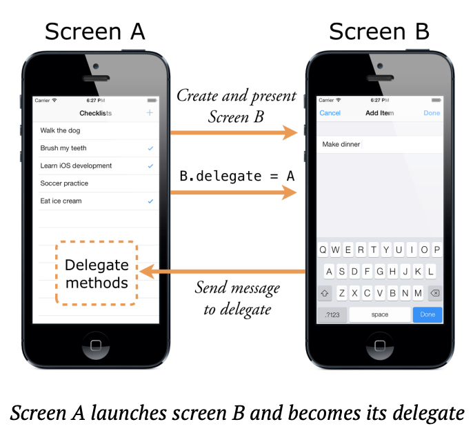建立delegate的步骤
- 在B中建立delegate protocol
- 在B中建立一个delegate optional variable
- 在B中，需要传递信息时呼叫delegate method
- 在A中conformB的delegate protocol（inheritance）
- 告诉B，A是自己的delegate，一般在A的prepare method中做这一步
Optionals
Optional variable在declare的时候用？来表示，表明这个变量有可能是nil，在使用的时候也需要加？在varibale name的后面，如果使用了exclamation mark叹号！，则表示在此时不管变量是什么，强行取得其中的值，此时程序员保证变量在此时不可能是nil，风险也由程序员承担。是用叹号叫做force unwrapping
Weak
Weak表示两个objects之间的关系，当A对B的关系是strong时表示A是B的owner。当两个obejcts之间都是strong的关系我们可能会产生ownership cycle的问题从而导致memroy leak，因为没有人有资格destroy它的owner。所以我们尽量要维护一种一强一弱的对应关系。
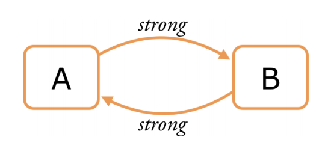 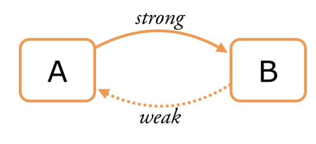一般来说，A如果是B的owner，A给B传值时在A的prepare method中，此时B的instance已经被建立，A很容易把值传给B的properties，并指认成为B的delegate，B给A传值则需要在合适的时候呼叫delegate methods
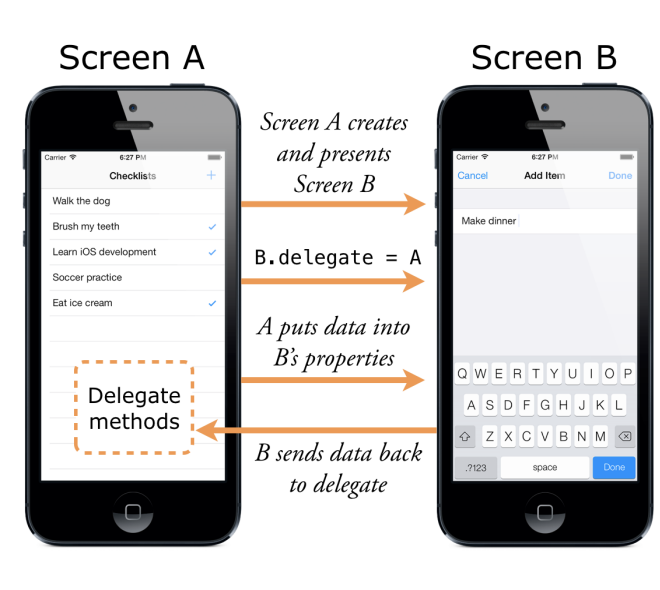Save data
app会在合适的时候将用户数据保存到手机本地，每一个app都有一个属于自己的folder，也叫做sandbox，每个sandbox之间不能访问，这就预防了一些恶意软件在用户不知情的情况下窃取保存在用户手机其他地方的数据。
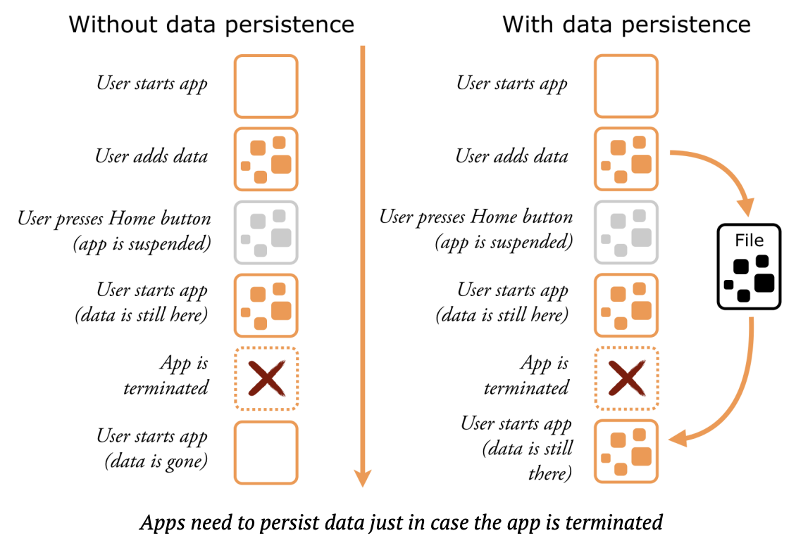数据一般会保存在这样的一个path中，我们可以看到application后面接着一串32的字母的应用ID
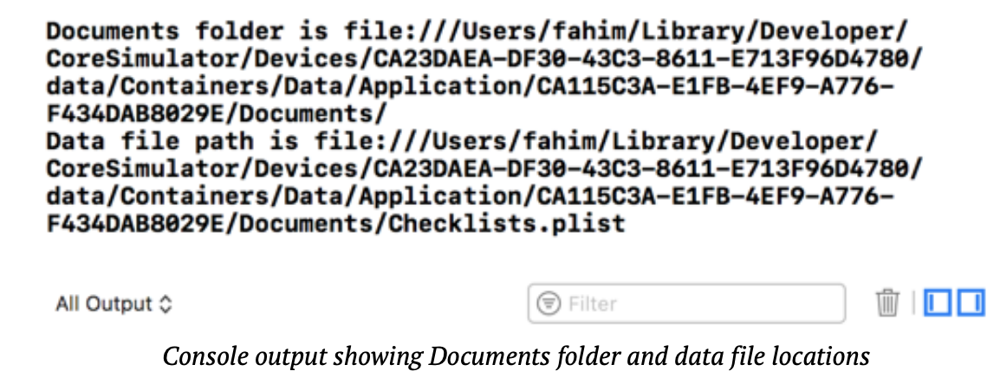.plist file
什么是.plist文件？它是一种ios用来储存数据的文件，它遵循XML格式，每一个app都有一个info.plist file，他就是用来保存这个app的配置信息
Special comments
在编写代码时我们可以使用 // MARK：- 的形式来告诉Xcode我们开始了一个section，这样在jump bar中我们就可以快速定位variable，methods的位置。
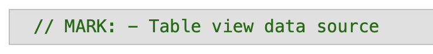 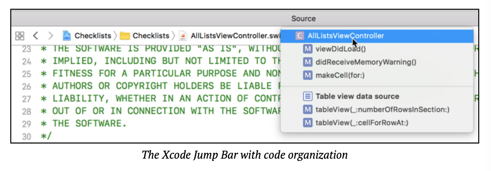Type casts
我们使用 as! 来给一个variable赋予一种data type，告诉Swift以后把它当成某一种type来处理，因为有时候我们知道它的type，可是Swift却不知道。
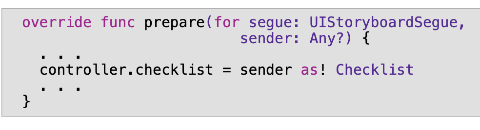Array of arrays
当app的结构变得复杂时，数据的结构也要相应的变化以适应这些变化，我们可以使用嵌套的array来储存更多的数据
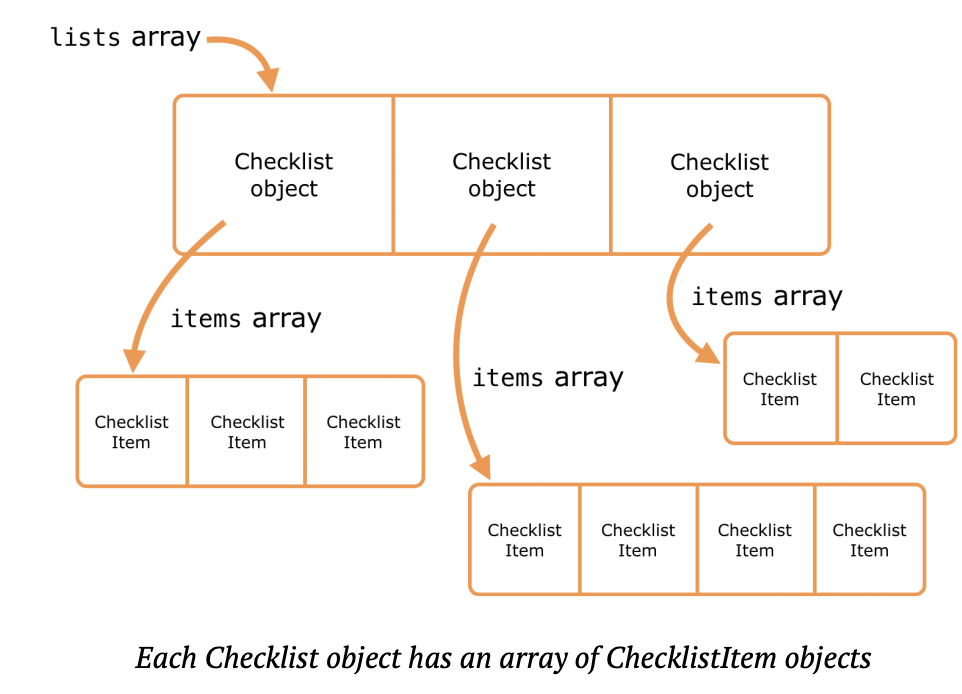AppDelegate.swift
这个文件用来负责当app刚启动时或快要结束时的一些情况，我们不需要每过一会就储存数据，只需要每当用户退出app或者切换app时，所以这些method需要在AppDelegate里面修改
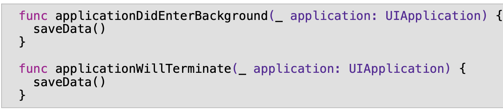Dictionary
和array类似，dictionary也是一种储存数据的类型，只不过它是将数据按照key-value pair来排列的，当需要拿到某一个数据时，我们需要给dictionary相应的key。
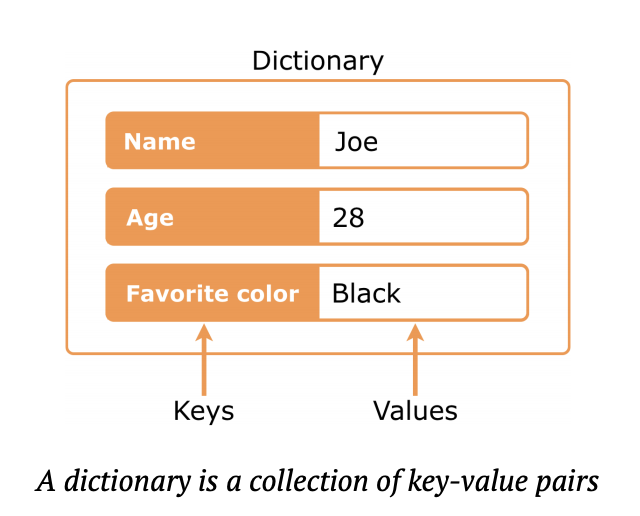User Defaults
User Defaults就是一个dictionary类型的数据储存文件，它包含户用的配置信息，我们使用它储存一些app刚开始时的默认配置。
Local Notifications
当获得用户许可后，app可以定时在app不活跃时像互用手机发送提醒
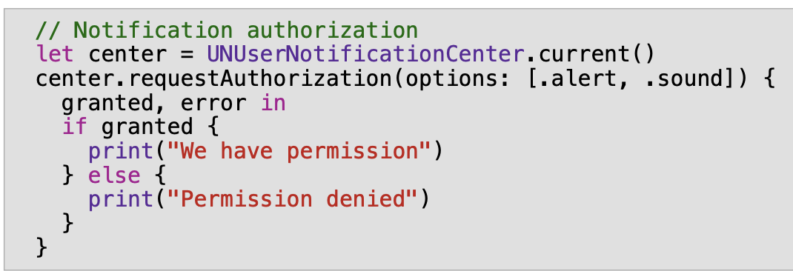 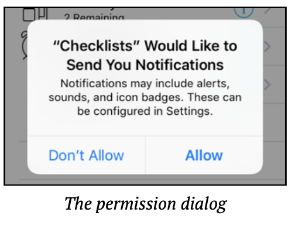 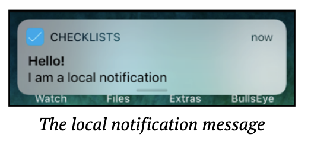这些基本就是第二个app的全部内容了，关于代码的部分可以在我的github的iOSApprenticePratice里面找到，下面是整个app的final storyboard
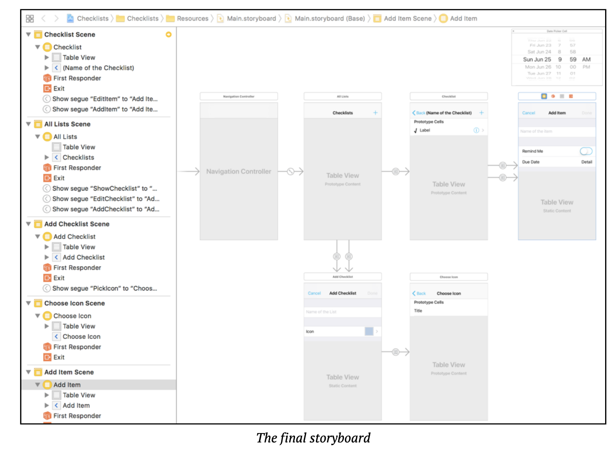第三个app: MyLocation
app overview: 第三个app我们要做一个可以通过GPS显示当前位置信息，并可以储存，增加照片和类别，在以后可以查看的app。完成之后的效果如下
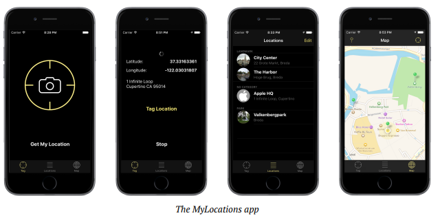Tabbed application: 之前的checklist我们学会了如何制作一个有navigation bar的app，这回我们要在app中增加一个tab bar，就是下屏幕最低端有一个导航条，可以切换不同的页面。许多主流的app都有类似的功能。
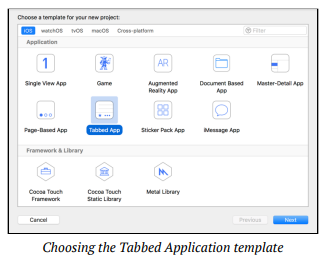 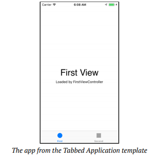 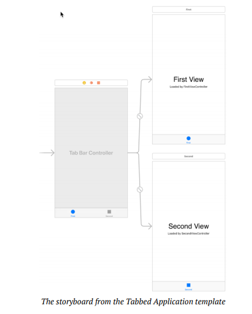CoreLocation and ask for permission: 要想让app获得GPS信息，我们需要现象用户获得许可，如果用户拒绝让app使用GPS，我们则无法获得权限。我们需要在info.plist里面增加一个record，表示我们需要获得许可，之后我们还会请求照片查看和地图view的许可。
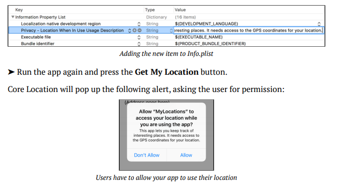Reverse geocoding: 当我们获得了GPS信息，也就是当前位置的经纬度之后，我们还需要将他们转换成地址信息，否则用户也无法直接通过经纬度对当前位置有什么具体的概念。我们要做的是使用swift内置的CLGeocoder.reverseGeocodeLocation来转换。然后我们就可以得到地址信息了。
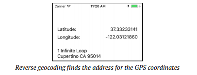Auto-resizing: 自动调整尺寸大小是一个非常重要的功能，现在市面上的iPhone屏幕尺寸很多，我们如果想对每一个尺寸做优化，为非常耗时，所以使用auto-resizing，让swift知道element在屏幕上的相对位置，比如距离屏幕底端100px，宽度等于屏幕宽度。这样swift就可以画出他的坐标，对于不同大小的屏幕也不会超出屏幕之外。
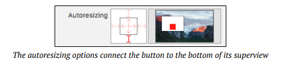 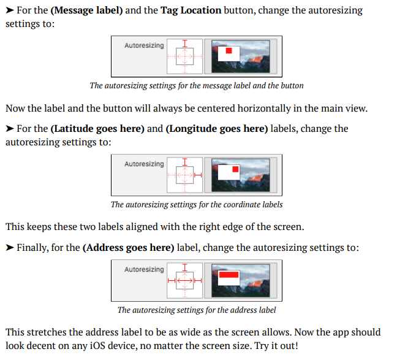Class inheritance, overriding and casts: 现在我们来说一下OOP中非常重要的一个概念，class。object就是class的一个具象，而class是这个具象的类。inheritance就是子类可以继承他的parent class的信息。而overriding是说子类可以改变parent class的一些信息，让他有自己的特点。比如汽车是一个parent class，而公交车就是汽车这个class的一个子类，汽车如果有一个property是说自己的轮子个数为4.那么公交车就可以overr这个property，将轮子个数改为8，或者12，或任意。。。casts则是说某些时候swift并不知道现在的变量到底是什么类，只知道他是属于哪个大类的，那么我们如果要使用只存在于子类的properties，我们就需要将这个变量cast成我们想要的类。一般用as!
Tag Location Screen: 接下来我们看看怎么给现在获得的位置信息添加一些其他的信息，比如description，photo，category。那么我们就需要一个table，这个table我们知道他会有多少行，所以不需要使用prototype cells，使用static cells就可以了。制作一个这样的table非常基本，description用text view，image picker我们之后会讲，category使用disclosure indicator，其他cell就用right detailed就可以。
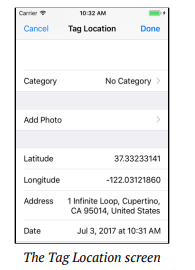The unwind segue: 当我们点击category时会进入到另一个table with prototype cells。再选一个category后就会回到之前的这个tag location screen，像这种返回式的我们可以使用unwind segue来实现
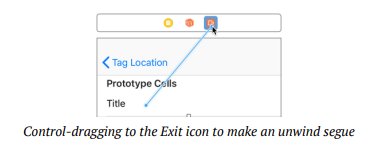The HUD: heads-up display是一种popover view，其实他就是一种view，只不过正常的view现实时其他的view会先被destory以节省memory，但是HUD往往会将背景设置成本透明并保留之前的view，让app有一种层叠的感觉。
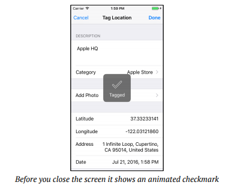Core Data overview: Core Data相当于储存在本地的数据，swift使用SqlLite数据库储存本地数据，我们需要将所有的location信息储存在Core Data中，以便以后打开app时查看之前tag的地点
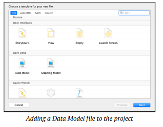Notification center: 跟iPhone提醒不一样的是，swift有一个Notification center可以让开发者方便的listen从app任何地方发出的notification。比如我想在用户任何时候对储存在Core Data里的Locations信息进行读取，增加，删除，修改的时候得到提醒，我就可以在appDelegate里设置一个notification method，任何地方发出的LocationsUpdatedNotification都会被我捕捉到，并在这个method里面进行相应的操作。
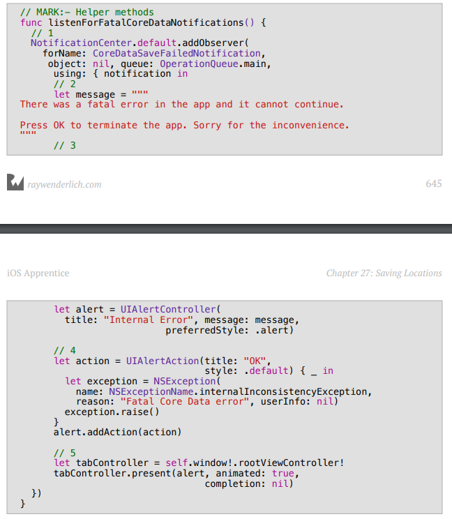The Locations Tab: 这个view就是显示所有储存在Core Data Locations里面的信息。基本的table with prototype cells，难点在于将Core Data信息提取并转换成相应的type，还有就是在不关闭app的状态下，新增的location可以马上更新到Core Data并显示在此view中，不过有了notification center相信各位也知道怎么做了。
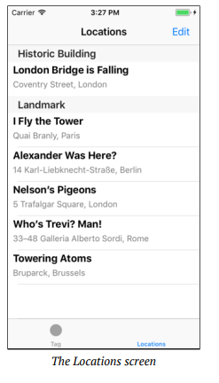Custom table view cell: 将一个cell的layout写在一个新的文件中，使得代码更易读。跟写在LocationsTabViewController是一样的，只不过拉outlets的时候选新的文件就好了。
Map Kit View: 我们可以在info.plist里增加map view来获得显示apple map的许可。
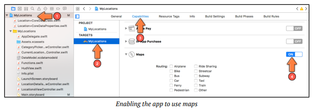 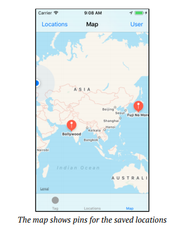Image Picker: 同样，请求获取照片查看器的许可
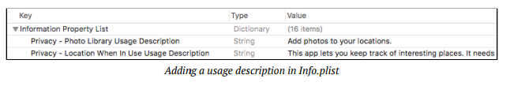Ownership cycle in closure: 先复习一下什么是closure，他其实就是一个method，没什么特殊的，只不过他需要依附于另一个method才能存在。在某些条件被满足时，closure block里面的代码会被执行，比如一段时间过后，api返回成功之后等等。在执行closure时，我们往往会用到被依附的method的property，这时我们需要使用self来显式调用。然而这表示我们对这个property有一种strong reference，并可能导致在closure被执行之前，即使被依附的method所在的class无法被destory，造成memory leak，这是我们就需要使用weak self来破坏ownership cycle。
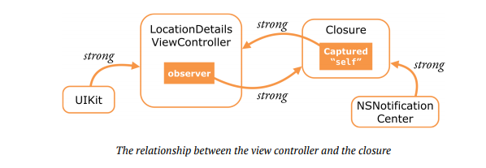剩下的就是一些外观，音效和动画的改变了，这里就不赘述了。
第四个app: StoreSearch
这本书的最后一个app将用到向apple store发送request获取信息，使用version contorl tools，对iPad等大屏幕设备的适配，异步通信以及把app上传到app store，可以说是一个简单的软件开发流程了。最终完成的结果如下
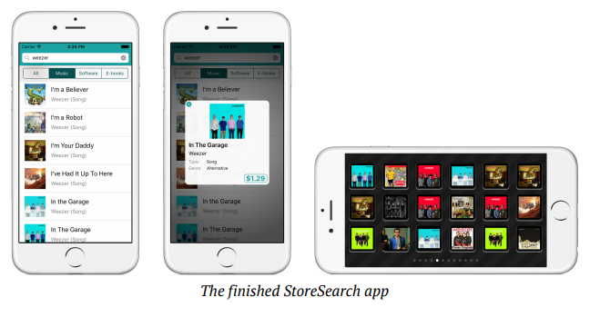Git Version Control是一个代码管理软件，当我们完成一个阶段的代码后，希望把他保存成一个副本，以后可以随时返回到这个地方。Xcode可以接连到github等网站进行更好的代码管理，也可以使用terminal。我比较喜欢使用terminal，常用的几个指令是：
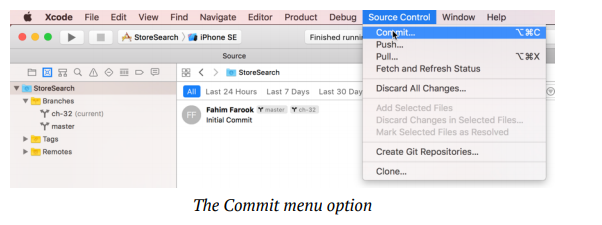 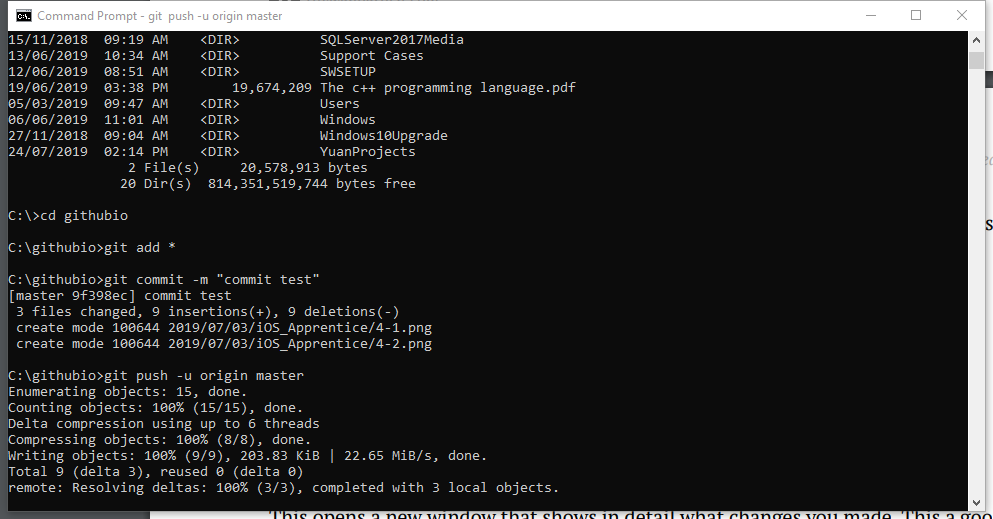git add *
git commit -m "commit message"
git push -u origin master
当我们想在已经工作的代码中新加一些功能却又害怕出错，然后又改不回来，我们可以使用git创建一个新的branch，然后在新的branch中肆意更改，不用害怕出问题，这就相当于一个副本，如果改不会去了可以直接删掉，git会保存最后工作的版本。若果一切顺利，也可以将新的branch与master合并
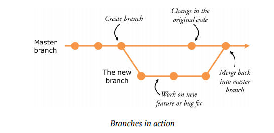当我们在View Controller中创建outlet时，应该使用weak relationship，这是因为每一个view都基本是从另一个super view中继承而来的，所以如果使用strong relationship，将导致view无法被摧毁。
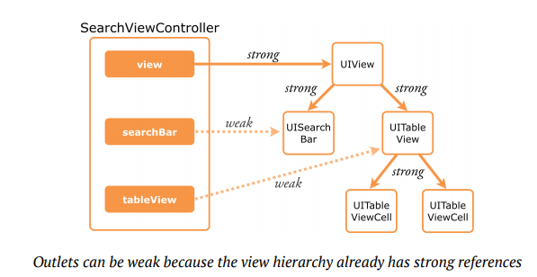Create branch and merge
NeXT Interface Builder: nib file or xib file, 是一种局部storyboard，比如如果我们想设计一种table cell，就可以创建一个新的nib file，然后将这种custom table cell发给任何一个storyboard中的table view， nib file给我们提供多的灵活性
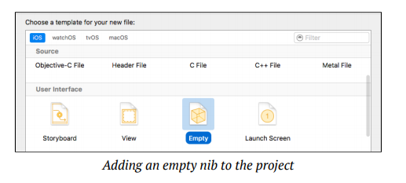 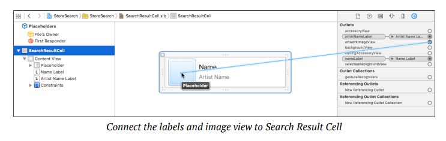Debug using Xcode, 与其他IDE相似，可以设置breakpoint来暂停程序，查看此时各个变量的值。在debug console中输入p instanceName 可以print出想要查看的object的值
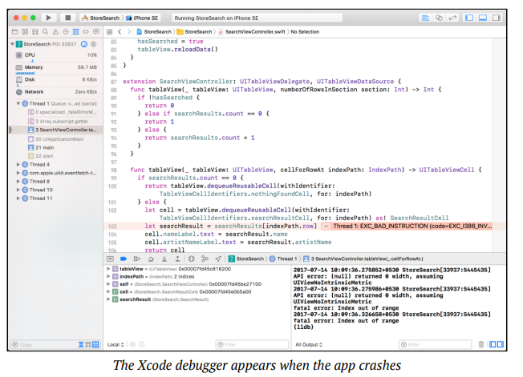 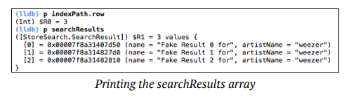calling the web service: 这个app的第一个重头戏就是send API request, 这也是软件开发中最常见的也是必不可少的技能，API request最常见的有两种，GET 和 POST， GET一般用来从远端提取数据，POST一般用来添加或改变远端数据，而API就是本地程序和远端数据连接的接口。本书使用了最简单的没有任何限制的GET request。
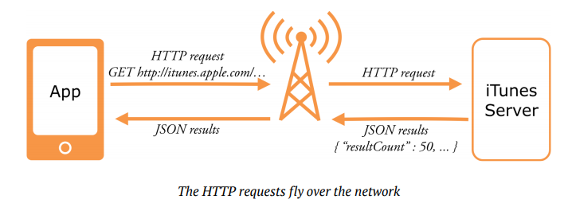 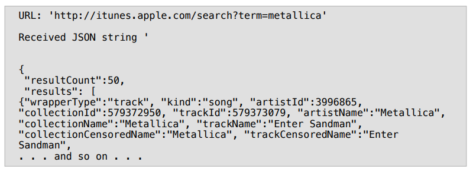encode the url text to escape special characters: 在向API发送请求时我们经常需要一同发送一些parameters，但是space和很多其他它特殊符号都是不能被正常处理的，所以我们需要encode url再发送
Parse JSON data: 返回的数据一般是以JSON的形式组成的，所以我们需要deserilize，Swift有提供官方的decoder可以直接使用
using network link conditioner: 从发送API请求到收到数据总会有那么几秒钟时间，这时如果你的程序是在主线程上，你将无法执行任何操作。直到获取数据。如果网络速度很慢，那么结果将非常糟糕，我们可以使用network link conditioner这一额外开发工具来模拟网速极慢的状态。
Asynchronous networking: 那么如果解决这几秒钟的类似于死机的状态呢？我们可以使用多线程，并将API请求的操作放到另外一个线程中，这样主线程将不受影响，注意，所有和界面变化相关的操作都应该放在主线程。所以即使数据没有收到，用户也可以进行其他操作，比如取消请求。。。
URLSession: 这是一个专门用来负责多线程的API。他可以负责下载请求，数据请求等很多工作。本书使用URLSession来处理异步通信问题。
Segmented Control: 这是一个很常用的UI模块, 每次切换时可以把segmentedIndex的值传给controller来负责update UI
DownloadTask
Show DetailView with Present Modally segue: 当点击每个table cell时，会出现这样的一个显示详细信息的窗口，并且也可以看到下面的table view，这个做法其实很简单，每当swift切换到一个新的view时，之前的view默认会被摧毁，但是我们可以改变delegate method，让之前的view保留，并把新的view背景设置成透明。
Dynamic type text: 一些app的字体可以根据用户的系统设置而改变，这就要求我们使用默认字体大小，类似于headline
对于一款手机app来说，好的排版是非常重要的，因为涉及到不同的屏幕尺寸，使用auto-resizing让排版适应所有类型的手机可以扩大目标受众，而不是只为一款手机开发
Landscape: 对于像iPad和iPhone Plus的机型来说，很多时候我们会把手机横置，这个时候因为屏幕的宽度和高度变化，我们希望app可以呈现出另一种不同的layout以适应变化的屏幕。
对于这种情况，swift定义了size classes，我们可以通过查看size class区分手机什么时候是横置的。拿iPhone 6 Plus来举例。如下图，当手机竖置的时候，手机屏幕的高度（vertical）是regular模式，而宽度是compact模式，而当手机处于横置的状态时，手机的高度变成了compact模式，而宽度变成了regular模式。这样，我们在写代码的时候，就可以对每一种situation，制定不同的显示模式了。
Enums with associated values: 在StoreSearch这个app中，用户有没有perform search action一共有四种状态，1.还没有search。 2.正在searching。 3. search结束，并且没有找到任何结果。 4.search结束，并且找到了至少一种结果。 那么对于这样一种状态，与其定义四个变量然后在viewcontroller里面查看这四个变量的true/false值，不如直接定义一个enum然后只需查看这一个enum的值即可。
internationalization: 有时候，我们希望让我们的app被来自不同国家使用不同语言的人使用，那么我们就需要将我们的app翻译成不同的语言。我们可以在info tab里新加一种语言。
另外，针对不同的view，我们还需要对每个view新加对应的语言文件。
至于那些不在storyboard里显示的语言信息，我们需要使用NSLocalizedString把所有的语言文本标记出来，再添加到strings文件中去
split view contorlle for iPad: split view是大屏幕设备常用的显示模式，例如iPad和iPhone plus。它可以轻松的利用空间，显示出原本需要两个view才能显示出的内容。
config elements in storyboard based on size class: 但如果我们用之前的view size，在iPad等设备上就会显得很小，所以我们需要针对大屏幕设备进行优化。我们可以在attribute tab找到constant，点击加号来增加一个针对不同情况的尺寸，之前说到iPad设备在横置模式（landscape）下高度和宽度都是regular的，所以这里wR hR就是width Regular, height Regular。这种情况下我们将view size改为500.
popovers view controller: 如图所示，这是一个在一个view之上的popover view,可以用来表示一个新的menu
email compose sheet: 这是一个可以在app中打开的内建email系统，提前设置好标题和收件人，当用户执行这个method，直接输入email的内容，就可以发送到开发者的邮箱，前提是用户必须提前设置好email账户。
beta testing: test flight: 当你完成一个app之后，可以把它发布到app store，这需要几个步骤，首先你需要提交一个build，在进入iTunes connect查看提交的app，在这里你可以分配给同一个team的其他测试者，这一步称为internal testing，如果一切都没问题，你可以submit app to app store. 如果app通过apple的审查，就可以进行external testing，将app的测试码发给任何人，他们可以通过测试码下载并测试app。
小结
本来想用10天的时间看完这本将近1100页的书，最后用了将近20天才完成。在做最后一个app的时候又有其他的工作加进来，周末又一直有活动，才又延长了这么长时间，不过完成了就是好的，对于一个对iOS没有任何经验的人来说，的确是一本不可多得的好书，如果对自己的编程能力有信心，之前又接触过Java或者C++,直接读这本是没有任何问题的，不过如果没有任何编程经验，从另外一本Swift Apprentice开始更好，从了解swift语言基本开始，使用Xcode playground。
这四个app基本解决了我制作其他app时的所有问题，常用的storyboard object都用了，constraints，delegate, extension, custom with nib, localizition, API calling, local library, local database, simple animation, multi-threading, git, debug到最后app publish都有涉及。
不过在跟着做完所有app之后，我觉得还是需要自己制作一个app，在脱离了guide之后，靠自己的能力解决所有过程中的问题，能使学到的知识更加牢固。